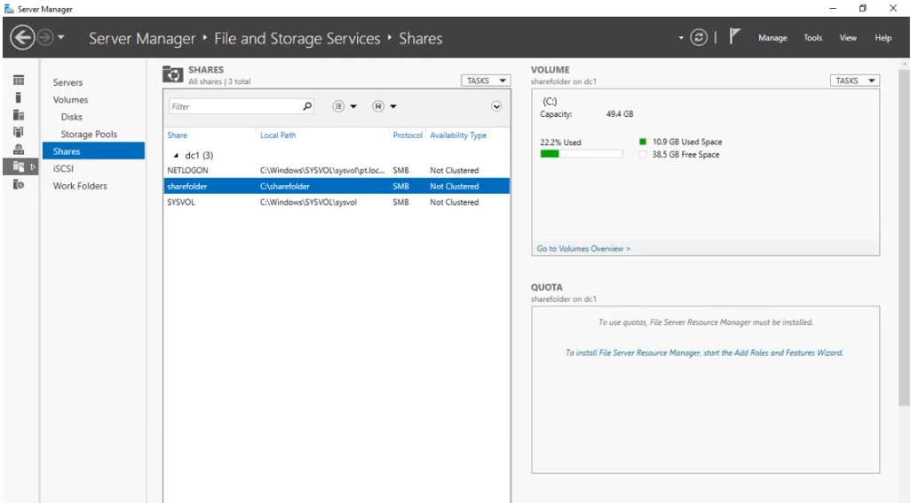

Создав папку, можно стандартными средствами Windows
дать до нее доступ выбранным объектам домена, но стоит учитывать, что сетевой
путь папки будет зависеть от имени сервера, который дает доступ до этой папки и если он
будет недоступен, доступ до папки будет невозможен.
В данном меню Windows можно дать доступ к папке через
сеть.
Расширенная настройка
С помощью Server Manager можно
создать сетевую папку с особыми настройками, такими как:
Кеширование данных
Шифрование данных
Сокрытие видимости от пользователей
Создать не только SMB ресурс, но и
NFS хранилище
Настройка на Windows Server
Distributed File System
DFS - компонент Windows,
использующийся для упрощения доступа к папкам (абстрагирует пользователя от полного пути до
файла/папки) и управления файлами.
Права безопасности NTFS
Кроме самих данных файловая система Windows
хранит их атрибуты безопасности (метаданные, которые описывают файл, атрибут
может находится в двух состояниях: установленный или снятый) и ACL (Access
Control List, указывает какой объект (его SID) и какие действия он может производить с выбранным
файлом/папкой)
Примеры атрибутов:
Системный (S)
Скрытый (H)
Неиндексируемый (I)
Доступ только для чтения (R)
Сжатый (C)
Access Control List
ACL (или разрешения) указывает, какой объект и
какие действия может производить с этим объектом.
ACL применяется относительно SID, и атрибуты и
ACL могут иметь не только файлы, но и папки плюс вложенные в них файлы/папки.
Запрещающее разрешение имеет более высокий
приоритет (если на один объект действует и запрет, и разрешение одного и того же правила).
Модульная система, позволяющая объединять в
одном месте различные оснастки, например (монитор ресурсов сервера, журнал, оснастки AD,
запланированные задачи, групповые политики)
Оснастка Active Directory Users and
Computers (ADUC) позволяет управлять содержимым службы каталогов, создавать объекты
домена, настраивать атрибуты объектов, просматривать объекты
Оснастка Task Sheduler (планировщик
задач) позволяет работать с запланированными задачами ОС Windows
Журналы Windows
Это специальные log-файлы (расширение
.evtx), в которые система записывает все значимые для компьютера события, такие
как:
Установка нового устройства
Ошибки в работе приложений
Вход пользователя в систему и тд
Журнал приложений (Application)
Хранит важные события, связанные с
конкретным приложением. Эти данные помогут сисадмину установить причину отказа той или
иной программы. Зависят только от разработчика программы.
Журнал безопасности (Security)
Хранит события, связанные с
безопасностью (такие как: вход/выход из системы, управление учетными записями, изменение
изменение разрешений и прав доступа к файлам и папкам). Два типа сообщение - Audit Success
и Audit Failure (успех или отказ доступа)
Кроме трех основных журналов Windows
существует большое кол-во журналов конкретных программ и сервисов. Некоторые журналы
интересны для передачи в SIEM, т.к. помогают в полной мере оценить, что происходит в
системе. Например журнал аутентификации Windows и Directory Service
Для автоматической отправки журналов
необходимо через групповые политики настроить пункт “Computer Configuration /
Administrative Templates / Windows Components / Event forwarding”
Отправка журналов
Для автоматической отправки журнальной
информации необходимо через групповые политики настроить пункт
Computer Configuration / Administrative / Templates / Windows Components / Event Forwarding
{kind=link}
{kind=link}
{kind=link}